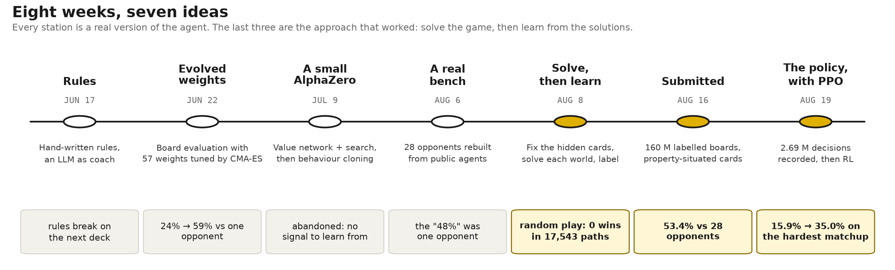
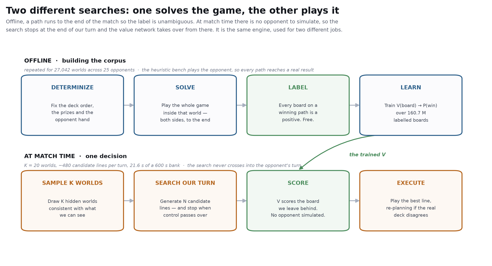
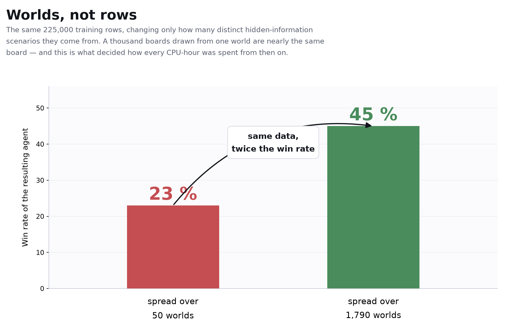
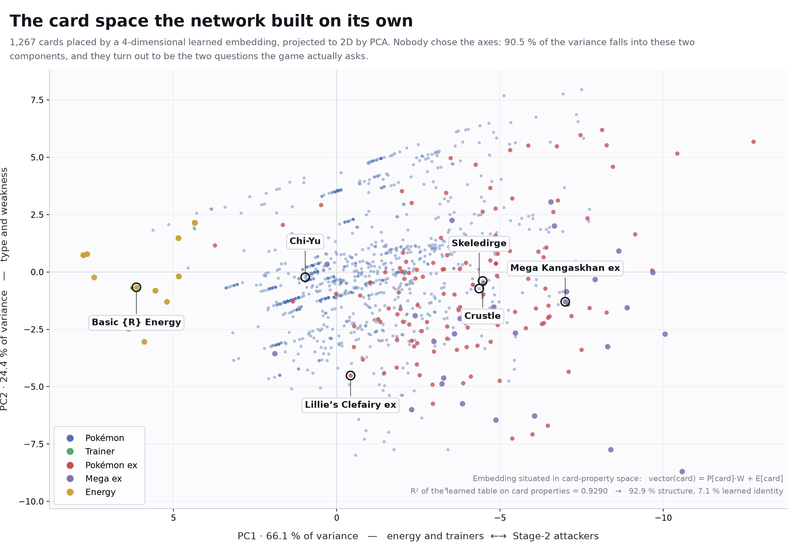
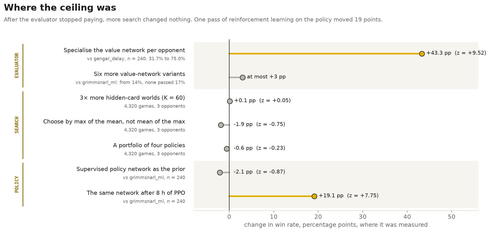
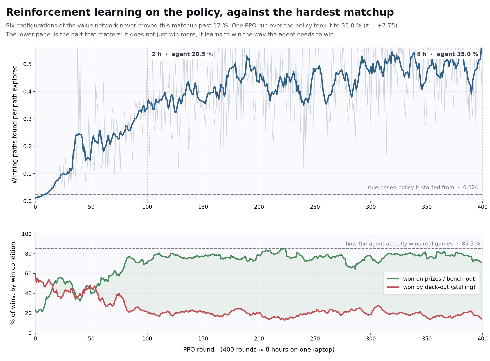

Adapting AlphaGo to a card game where half the board is hidden: solve the game thousands of times with the hidden cards fixed, learn from the solutions, and search with what was learnt.
About forty decisions per match, the opponent's hand, deck and prizes unseen, and 1,267 cards whose text can rewrite what a turn means. A Kaggle competition by The Pokémon Company asked for an agent that plays it.
Inside a world where the hidden cards are fixed there is no hidden information. Solve thousands of such worlds, label every board on a winning path, and learn from the labels.
Nobody told it how to beat Crustle. Its best lines attacked with Chi-Yu, the deck's only non-ex attacker, again and again: the counter-strategy, found before we understood the matchup.

Inside a fixed world there is no hidden information at all. The match stops being a probabilistic problem and becomes a deterministic puzzle that only has to be solved.THE IDEA THE WHOLE AGENT IS BUILT ON
The submitted agent against every opponent on the bench, one per archetype of the metagame, 50 games each with alternating seats. The same pipeline produced all of it, with no per-opponent rule. Pick an opponent to see its 50 games.

Offline, each world is solved to the end and every board on a winning path becomes a positive label. At match time the agent samples 20 worlds, generates candidate lines for its own turn and lets the value network score the board it leaves behind.

02 / 05The same 225,000 training rows spread over 1,790 worlds instead of 50 doubled the win rate. Every CPU-hour after that went into covering more scenarios: 27,042 worlds, 160.8 million boards.

03 / 05Each card's embedding is placed in the space of its properties, so cards never seen in training land next to cards that behave like them. Two axes nobody chose hold 90.5% of the variance: how threatening a card is, and its type and weakness.

04 / 05After the deadline: the evaluator already ranked the right cards first, and 4,320 games of extra search moved nothing. The limit was the policy guiding the search, which never built the boards that win.

05 / 052.69 million recorded decisions, an action vocabulary cut from 38,192 to 290, a supervised policy as warm start, and 8 hours of PPO: 15.9% → 35.0% on the hardest matchup, winning by prizes rather than by stalling.
| Go | Pokémon TCG | Our answer | |
|---|---|---|---|
| Information | The whole board is visible | Hand, deck and prizes hidden | Determinize: solve worlds with the hidden cards fixed |
| Actions | 361 points | Up to 38,192 combinations | Reduce each Pokémon to its card id: 290 actions |
| Rules | A handful | 1,267 cards, each with its own text | Opponent by properties; card embedding situated by properties |